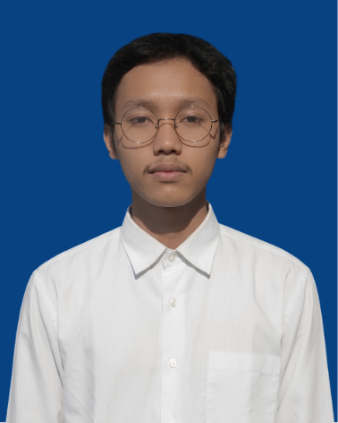

RIZAL EFENDI
Web Developer
Profil
Mahasiswa Teknik Informatika yang berfokus pada bidang web development dan desain UI/UX. Memiliki minat tinggi untuk mendalami teknologi pemrograman web serta merancang antarmuka aplikasi yang fungsional dan intuitif. Berambisi untuk mengembangkan karier secara profesional sebagai web developer.
Data Pribadi
Pendidikan
SMP NEGERI 2 Tambakromo
2017 - 2020
SMK Bani Muslim Pati
2020 - 2023
Jurusan MultimediaUniversitas PGRI Semarang
2023 - Sekarang
Teknik InformatikaKeahlian
Pemrograman & Web Development:
- Bahasa Pemrograman: HTML, CSS, JavaScript, PHP, Golang, Python
- Framework & Teknologi: Laravel, RESTful API, MySQL
Desain & UI/UX:
- Software Desain: Figma, Canva, CorelDRAW
- Keahlian Desain: Wireframing, Prototyping, UI/UX Design, Tata Letak Visual
Penyuntingan & Alat Kerja:
- Perangkat Lunak: Git, VS Code, Postman
- Multimedia: Editing Foto, Editing Video
Kemampuan Bahasa:
- Bahasa Indonesia: Aktif
- Bahasa Inggris: Tingkat Dasar
- Bahasa Jepang: Tingkat Pemula
PENGALAMAN &
KEMAMPUAN TAMBAHAN
Pengalaman
IT Web Developer (Magang)
- PDAM Tirta Moedal Kota Semarang
Januari 2026 - Maret 2026 - ● Mengembangkan sistem informasi berbasis web untuk otomatisasi alur pelaporan internal dan pengajuan barang.
- ● Merancang antarmuka (UI/UX) dan alur pengalaman pengguna agar sistem intuitif, responsif, dan mudah digunakan.
Finishing & Asisten Desain (Magang)
- Doriku Digital Printing
2022 - ● Membantu proses penyusunan layout dan desain materi cetak sesuai kebutuhan.
- ● Menangani proses pengerjaan akhir (finishing) produk cetak dengan ketelitian.
Penyortir Paket (Daily Worker)
- MyRobin (Penempatan: DC Shopee Tugu)
2026 - ● Mengelola dan memilah paket berdasarkan wilayah tujuan secara cepat, tepat, dan sesuai target operasional.
- ● Melatih ketahanan kerja, kedisiplinan waktu, serta fokus tinggi dalam lingkungan kerja cepat.
Publikasi, Dekorasi, & Dokumentasi (PDD)
- Kuliah Kerja Nyata (KKN)
Juli 2026 - September 2026 - ● Bertanggung jawab penuh atas visual branding program KKN, termasuk desain poster, konten media sosial, dan banner kegiatan.
- ● Mengabadikan momen serta melakukan penyuntingan foto dan video (video editing) untuk laporan dan dokumentasi publik.
Kemampuan (Soft Skills)
Karakter Profesional
- Berpikir Kreatif & Inovatif: Mampu mencari solusi alternatif dalam pemecahan masalah kelompok.
- Kemandirian Kerja: Mampu mengemban dan menuntaskan tugas secara mandiri dengan tanggung jawab tinggi.
- Semangat Belajar: Sangat antusias terhadap tantangan dan hal-hal baru.
- Adaptasi Cepat: Terbiasa dan luwes menyesuaikan diri dengan lingkungan baru secara proaktif.
Visi Kerja
Berkomitmen untuk memberikan dedikasi penuh dan kontribusi positif dengan memanfaatkan keahlian pengembangan web guna menciptakan solusi digital yang fungsional, intuitif, dan mendukung efisiensi tim.
PORTOFOLIO &
PROYEK LAINNYA
Website UMKM Dusun Krajan
Aplikasi web informasi pemetaan dan pengajuan pendataan UMKM di dusun krajan desa bergas kidul.
Lihat ProyekSISTEM INFORMASI GEOGRAFIS
Website Visualisasi Tingkat Pelaporan Dan Penyelesaian Kasus Kejahatan Di Provinsi Jawa Tengah Tahun 2020–2024.
Lihat ProyekWebsite Laporan Dokumentasi Dan Kegiatan KKL
Website untuk menampilkan laporan dokumentasi dan kegiatan selama KKL
Lihat ProyekWebsite KKN UPGRIS DESA BERGAS KIDUL
Website untuk menampilkan laporan dokumentasi dan kegiatan selama KKN di Desa Bergas Kidul
Lihat Proyek
Website UMKM Dusun Krajan
Tampilan antarmuka peta interaktif UMKM Bergas Kidul.

CatatanKu App
Desain UI/UX aplikasi catatan berbasis Flutter.